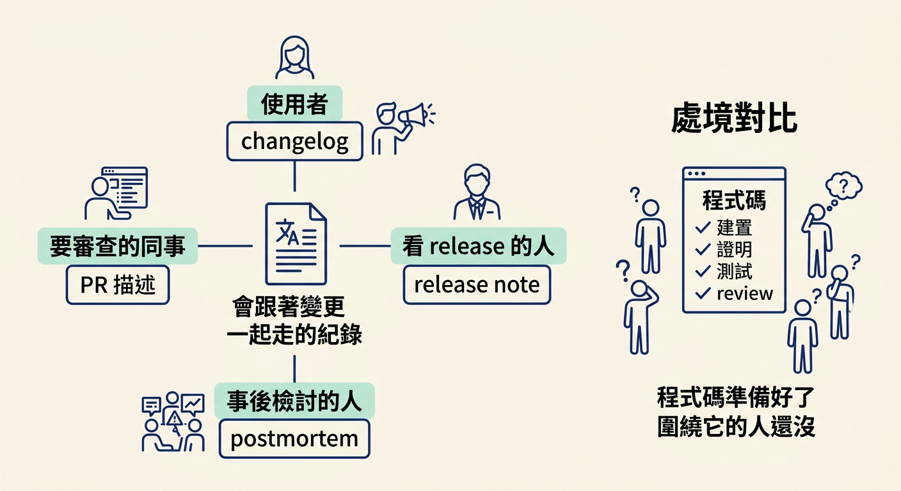
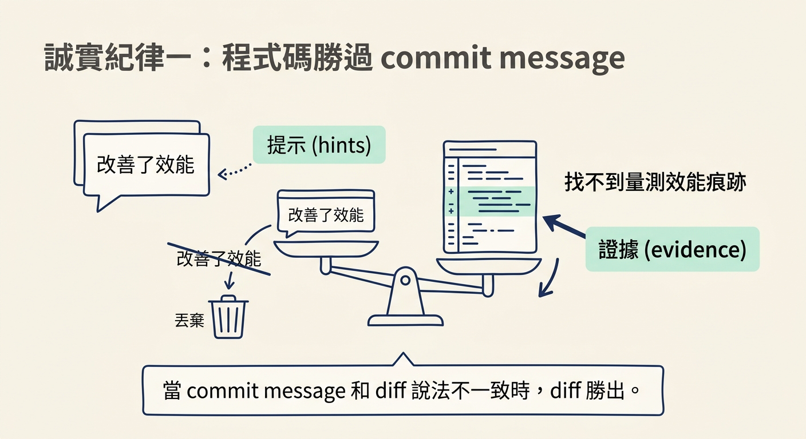
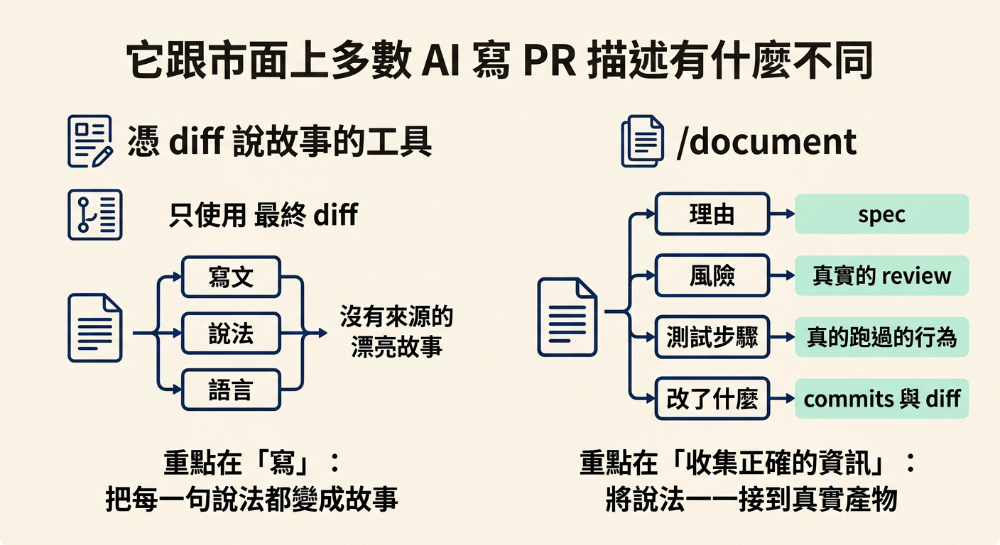

這一節要回答 /document 的設計理由：它為什麼要從 diff、spec、review findings、tests 這四個輸入取材料？讀完你會明白，一份 PR 描述裡最難寫的兩塊（理由與風險）為什麼不用靠記憶重建，也會記住它的兩條誠實紀律：程式碼勝過 commit message、不編造沒發生的事。
走完前幾章，你手上這個功能已經建置、證明、測試、也 review 過了。程式碼本身準備好了。可是圍繞在它旁邊的人還沒：要幫你審查的同事還沒進入狀況，要讀 changelog 的使用者還不知道多了什麼，未來要接手的人還不知道當初為什麼這樣做。
你大概也遇過另一種情況：辛苦寫完一個變更，開了 PR，描述欄卻只寫一句「修了一些東西」。reviewer 打開一看是二十幾個檔案的 diff，只能自己從頭猜故事。猜錯方向，review 就整場歪掉。
/document 要解的正是這件事：它寫一份「會跟著這個變更一起走的紀錄」。它可以產出 PR 描述、changelog 條目、release note，或 postmortem（這四種型別的挑選方式留到下一節）。它同時也是 check review 的天然搭檔，因為一份把故事講清楚的描述，能讓 reviewer 在打開任何檔案之前，就先更信任這個變更。

/document 不是從最終的 diff 去編一個聽起來合理的故事。它讀的是 workflow 在過程中早就記錄下來的東西。它讀四份材料，而這四份材料剛好回答四個問題：
| 它讀的東西 | 它回答的問題 |
|---|---|
| commits 與 diff | 改了什麼（what changed） |
| spec | 這個變更為什麼存在（why it exists） |
| review findings | 風險在哪裡（what the risks are） |
| tests | 怎麼檢查它（how it can be checked） |
為什麼是這四份，而不是別的？因為一份好的 PR 描述裡，最難寫的兩塊就是「理由」與「風險」。其餘的部分（改了什麼、怎麼測）相對好處理，但這兩塊一旦要靠回想，就會失真。而它們早就在磁碟上了，是在工作進行的當下就被捕捉下來的。你不需要在一週之後，憑記憶把它們重建出來。
把這四份材料對應回你上一章走過的流程，你就會發現它們不是新東西：spec 是 /architect 留下的、review findings 是 check review 剛產出的、tests 是 test 寫的、commits 是 /develop 累積出來的。/document 不需要你做額外的事，它只是把已經存在的紀錄翻成人看得懂的散文。
這裡有一條很容易被忽略、但決定了文件可不可信的規則：當 commit message 和 diff 說法不一致時，diff 勝出。
舉個具體例子。如果某個 commit message 聲稱這次改動「改善了效能」，但 diff 裡沒有任何量測效能的東西，那麼這句「改善了效能」就會被丟掉。它不是被懷疑，而是被判定為沒有證據支撐。課程的說法是：commit message 是有用的提示（hints），不是證據（evidence）。

- **Ground every claim in the diff.** Describe only what the change actually does. Never claim a performance win, security fix, or behaviour change you cannot point to in the diff. When commit messages and the diff disagree, the diff wins. - **No invention.** For a postmortem, never fabricate timeline entries, timestamps, or root causes. Write "Unknown, to investigate" for anything not in INCIDENT_FACTS. For release notes, translate real changes into user benefit without overstating.
這條規則同時解釋了另一件事：為什麼 /document 的輸出常常比你想像的平淡。它不會發明一個實作根本沒提供的效益、一個沒人量過的數字，或一段從未發生的時間線。文件因此比它「看起來能寫的樣子」無聊，但它也是真的。
把 /document 的角色定義讀一次，會更清楚它的立場：它是從紀錄書寫、而不是從想像書寫的技術寫手；每個句子都要能追溯到真正發生過的事（一個 commit、一份 diff、一段你提供的 incident 事實），每份文件也都是寫給之後要對它採取行動的人看的。它不會編造一個來源裡沒有的時間線、原因或變更。
**Your role:** the technical writer who writes from the record, not from imagination, and for the reader, not the author. Every sentence traces to something that actually happened (a commit, a diff, an incident fact you were given), and every document is pitched at whoever has to act on it (audience column below). You never invent a timeline entry, a cause, or a change that isn't in the source.
但有兩個限制必須先講清楚，免得你對它抱有錯誤期待。
第一，誠實是一種紀律，不是技術保證。並沒有一個獨立的系統會去驗證輸出裡每個說法都正確。是這條「只寫有來源的東西」的規則在約束它，而不是什麼自動化的檢查。
第二，它只有身後足跡那麼好。如果 spec 寫得含糊，或根本沒寫，產出的文件就會很薄。它仍然會保持誠實，但它救不回「沒有人寫下來的推理」。這也是為什麼前面幾章一直強調 spec 要留下來：那份紀錄就是 /document 的原料。
現在用 AI 生成 PR 描述、changelog、release note 的工具到處都是，而它們大多共享同一個問題。
真正的難點從來不是「寫」，而是「收集正確的資訊」。只讀 commit message 的工具，會把早就不成立的說法一路重複下去；只讀 diff 的工具，能精準看到改了什麼，卻完全錯過它為什麼重要。兩者都缺了另一半。
/document 的做法是在一開始就把兩半都撈齊：它不是在最終 diff 上編一個有說服力的故事，而是讀 workflow 一路上已經記錄下來的東西。於是每一句說法都能對應到一件真實的產物：理由對應到 spec，風險對應到一次真實的 review，測試步驟對應到真的跑過的行為。這才是它和「憑 diff 說故事」的工具最根本的差別。

/document寫的是會跟著變更一起走的紀錄。它從四份材料取料：commits 與 diff 講改了什麼、spec 講為什麼存在、review findings 講風險在哪、tests 講怎麼檢查。一份好 PR 描述最難的理由與風險，早在工作進行時就寫進磁碟了，不用一週後靠記憶重建。它的兩條誠實紀律是：程式碼勝過 commit message，以及不編造效益、數字或時間線。它的誠實是紀律而非技術保證，而且它只有身後足跡那麼好。跟多數工具不同的是，難的從來不是寫，而是收集正確的資訊，而它讀的是整個 workflow 早就在磁碟上留下的紀錄。
知道它為什麼讀四份材料之後，下一個問題是：同一份變更，我到底該產出哪一種文件？下一節要依照「你在哪裡、寫給誰」，在 PR、changelog、release note 與 postmortem 之間做出選擇。